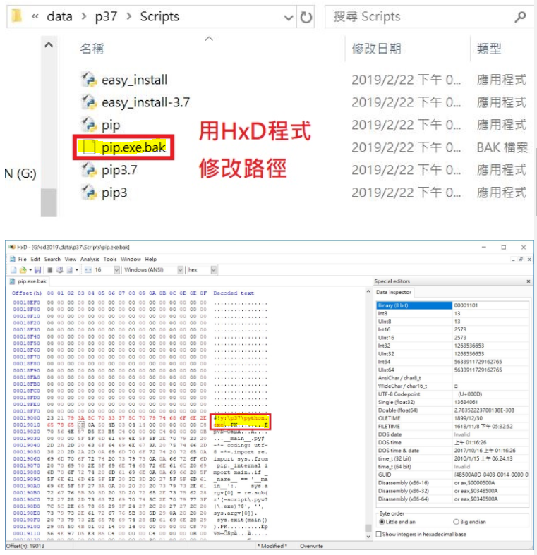
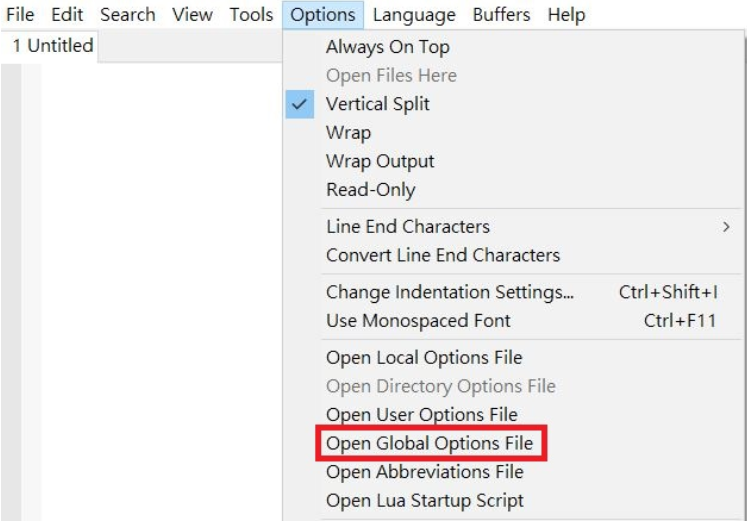
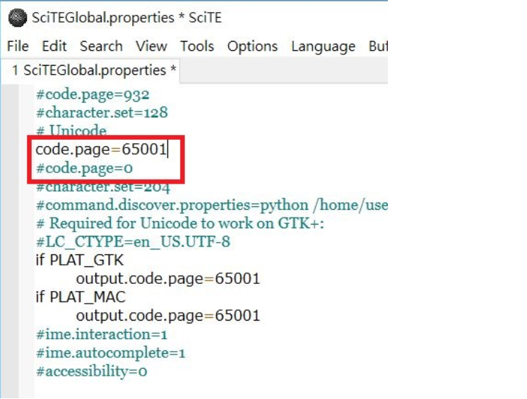

建立 Windows 64 位元可攜程式系統
1.下載 Python3.7.2，選擇 Windows x86-64 executable installer 。
2.安裝 Python 。
3.下載 HxD 。
4.打開 HxD 後，更改 pip 。

5.下載 SciTE 。
6.修改 code.page 使中文可在 SciTE上顯示。


7.下載 KDiff (用來比較差異性的工具)。
8.下載 TCC (Tiny C Compiler)。
9.修改 start.bat 及 stop.bat。